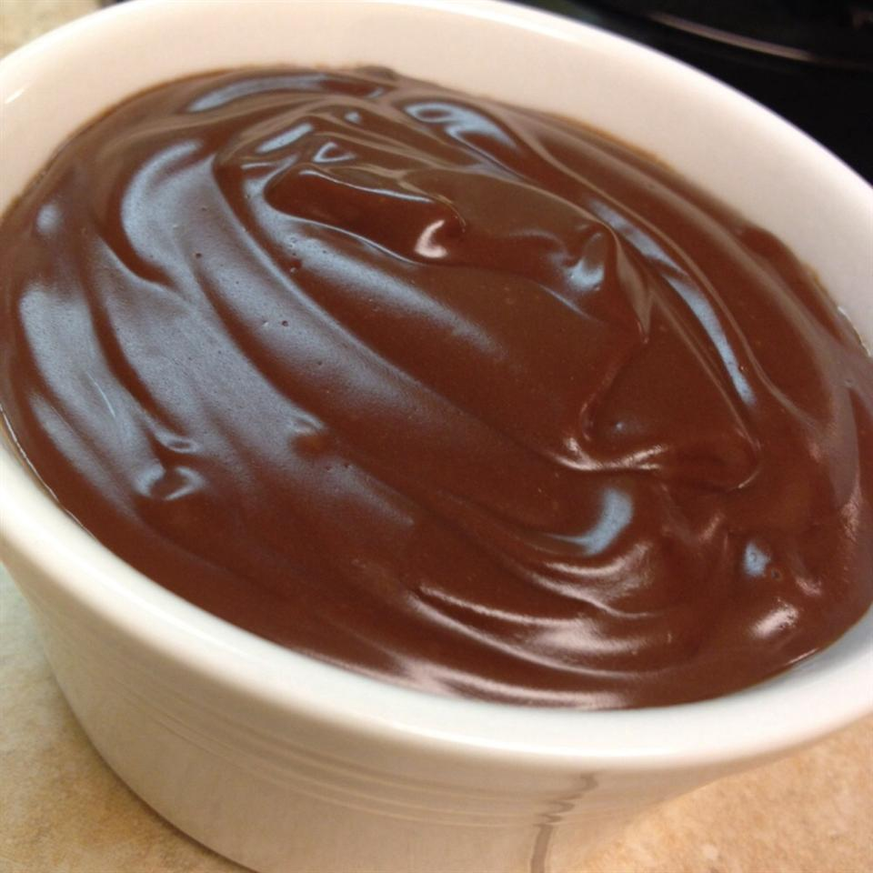

Vegan Chocolate Pudding Recipe

Description:
This is a simple, smooth and creamy vegan chocolate pudding.
I like to use ground chocolate as a substitute for the cocoa.
Ingredients:
- 3 tablespoons cornstarch
- 2 tablespoons water
- 1 ½ cups soy milk
- ¼ teaspoon vanilla extract
- ¼ cup white sugar
- ¼ cup unsweetened cocoa powder
Steps:
- In small bowl, combine cornstarch and water to form a paste.
- In large saucepan over medium heat, stir together soy milk, vanilla, sugar, cocoa and cornstarch mixture. Cook, stirring constantly, until mixture boils. Continue to cook and stir until mixture thickens. Remove from heat. Pudding will continue to thicken as it cools. Allow to cool five minutes, then chill in refrigerator until completely cool.